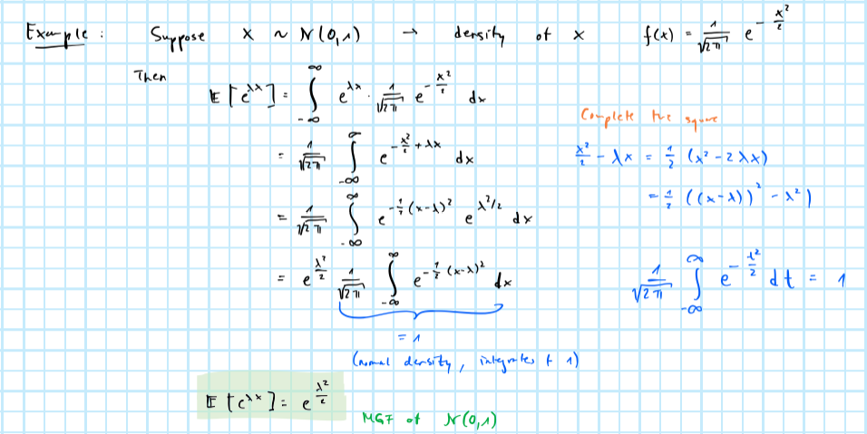

Chapter 2 Concentration inequalities
In order to measure the quality of an estimator we generally aim to minimize the expected value of a loss function \(\ell(x,y)\). Examples include:
- Mean squared error (MSE)
\[ \begin{equation} \begin{aligned} && \ell(x,y)=(x-y)^2 &\rightarrow \mathbb{E} \left[ \ell(x,y) \right] = \mathbb{E} (x-y)^2\\ \end{aligned} \tag{2.1} \end{equation} \]
- Mean absolute error (MAE)
\[ \begin{equation} \begin{aligned} && \ell(x,y)=|x-y| &\rightarrow \mathbb{E} \left[ \ell(x,y) \right] = \mathbb{E} |x-y|\\ \end{aligned} \tag{2.2} \end{equation} \]
More generally it is often useful to write:
\[ \begin{equation} \begin{aligned} && \ell(x,y)= \mathbb{1}_{|x-y|>\varepsilon} &\rightarrow \mathbb{E} \left[ \ell(x,y) \right] = P(|x-y|>\varepsilon)\\ \end{aligned} \tag{2.3} \end{equation} \]
2.1 Empirical mean
Let \(m\) denote the true value we want to estimate and \(m_n\) the corresponding estimator. An obvious choice for \(m_n\) is the empirical mean
\[ \begin{equation} \begin{aligned} && m_n&= \frac{1}{n} \sum_{i=1}^{n} x_i\\ \end{aligned} \tag{2.4} \end{equation} \]
for which we have
\[ \begin{equation} \begin{aligned} && \mathbb{E} \left[ m_n\right]&= \mathbb{E} \left[ \frac{1}{n} \sum_{i=1}^{n} x_i \right] = \frac{1}{n} \sum_{i=1}^{n} \mathbb{E} \left[x_i \right]=m\\ \end{aligned} \tag{2.5} \end{equation} \]
where the last equality follows from the law of large numbers. For the MSE of the empirical mean we have
\[ \begin{aligned} && \mathbb{E} \left[ m_n-m \right]^2 &= \mathbb{E} \left[ \frac{1}{n} \sum_{i=1}^{n} x_i-m \right]^2\\ && &= \mathbb{E} \left[ \frac{1}{n} \sum_{i=1}^{n} (x_i-m) \right]^2\\ && &= \frac{1}{n^2}\mathbb{E} \left[ \sum_{i=1}^{n} x_i-m \right]^2\\ && &= \frac{1}{n^2} n\text{var}(x_i)\\ \end{aligned} \]
and hence:
\[ \begin{equation} \begin{aligned} && \mathbb{E} \left[ m_n-m \right]^2&= \frac{\sigma^2}{n}\\ \end{aligned} \tag{2.6} \end{equation} \]
In other words, the size of the error is typically on the order of \(\frac{\sigma}{\sqrt{n}}\): the error decreases at a rate of \(\sqrt{n}\). Note that for the expected value of the mean absolute error we have \(\mathbb{E} |m_n-m| \le \sqrt{\mathbb{E} \left[ m_n-m \right]^2} =\frac{\sigma}{\sqrt{n}}\) by the Schwartz inequality.
What about \(P(|x-y|>\varepsilon)\), the third measure of expected loss we defined in (2.3)?
2.2 Simple non-asymptotic concentration inequalities
2.2.1 Markov’s inequality
2.2.2 Chebychev’s inequality
Proof. \[ \begin{aligned} && P(|X- \mathbb{E}X| \ge t)&=P(|X- \mathbb{E}X|^2 \ge t^2) \\ \end{aligned} \]
Then by Markov’s inequality:
\[ \begin{aligned} && P(|X- \mathbb{E}X|^2 \ge t^2)&\le \frac{ \mathbb{E} \left[ X- \mathbb{E}X \right]^2}{t^2}= \frac{ \text{var}(X)}{t^2}\\ \end{aligned} \]Applying Chebychev to the empirical mean we can show:
Proof. \[ \begin{aligned} && P(|m_n-m|>\varepsilon)&=P(|\frac{1}{n} \sum_{i=1}^{n} x_i-m|>\varepsilon) \\ \end{aligned} \]
and by Chebychev
\[ \begin{aligned} && P(|\frac{1}{n} \sum_{i=1}^{n} x_i-m|>\varepsilon)&\le \frac{ \text{var}(\frac{1}{n} \sum_{i=1}^{n} x_i)}{\varepsilon^2} \\ && &= \frac{ \text{var}( \sum_{i=1}^{n} x_i)}{n^2\varepsilon^2} \\ && &= \frac{ \sum_{i=1}^{n}\text{var}( x_i)}{n^2\varepsilon^2} \\ && &=\frac{\sigma^2}{n\varepsilon^2} \\ \end{aligned} \]By 2.3 we have that with probability \(1-\delta\): \(|m_n-m|\le \frac{\sigma}{\sqrt{n\delta}}\). This can be shown as follows: if we want to guarantee that
\[ \begin{aligned} && P(|m_n-m|>\varepsilon)&\le \delta\\ \end{aligned} \]
then by 2.3 it suffices that:
\[ \begin{aligned} && \frac{\sigma^2}{n\varepsilon^2}&\le \delta \\ \end{aligned} \] This holds if:
\[ \begin{aligned} && \frac{\sigma}{\sqrt{n\delta}}&\le \varepsilon\\ \end{aligned} \]
2.3 Asympotic concentration inequalities
2.3.1 Central Limit Theorem
By the Central Limit Theorem we have that
\[ \begin{aligned} && P \left( \sqrt{n} \left( \frac{1}{n} \sum_{i=1}^{n} x_i-m\right) \ge t \right)& \rightarrow P(z \ge t) \le 2 \exp(- \frac{t^2}{2\sigma^2}) \\ \end{aligned} \]
where \(z \sim \mathcal{N}(0,\sigma^2)\). Letting \(\varepsilon = \frac{t}{\sqrt{n}}\) we have that asymptotically
\[ \begin{aligned} && P \left( \sqrt{n} \left( \frac{1}{n} \sum_{i=1}^{n} x_i-m\right) \ge \varepsilon \right)& \le 2 \exp(- \frac{\varepsilon^2n}{2\sigma^2}) \\ \end{aligned} \]
which is a much tigher bound than for example Chebychev.
2.4 Exponential non-asymptotic concentration inequalities
The motivation for deriving tight non-asymptotic concentration inequalities is that often we have \(d >> n\). In those case we want to control the worst error across all estimators (here the \(1,...,d\) empirical means). Hence our goal is to minimize
\[ \begin{aligned} && P( \max_j|m_{n,j}-m|\ge \varepsilon) \\ \end{aligned} \]
By the union bound we have
\[ \begin{aligned} && P( \max_j|m_{n,j}-m|\ge \varepsilon)&\le \sum_{j=1}^{d} P( |m_{n,j}-m|\ge \varepsilon)\\ \end{aligned} \]
and by Chebychev (2.2):
\[ \begin{aligned} && \sum_{j=1}^{d} P( |m_{n,j}-m|\ge \varepsilon)&\le d \frac{\sigma^2}{n\varepsilon^2}\\ \end{aligned} \]
Clearly, if \(d>>n\) we are in trouble. Enter: Chernoff bounds.
2.4.1 Chernoff bounds
Proof. By Markov’s inequality we have that for any non-negative and increasing function \(\psi(.)\) we have
\[ \begin{aligned} && P(\psi(X- \mathbb{E}X) \ge \psi(t)) &\le \frac{ \mathbb{E} \left[ \psi(X- \mathbb{E}X) \right]}{\psi(t)} \\ \end{aligned} \]
With Chernoff bounds we simply choose \(\psi(X)=\exp(\lambda X)\), \(\lambda >0\). Then
\[ \begin{equation} \begin{aligned} && P(X- \mathbb{E}X \ge t) &\le \frac{ \mathbb{E} \left[ e^{\lambda (X- \mathbb{E}X)} \right]}{e^{\lambda t}} \\ \end{aligned} \tag{2.7} \end{equation} \]
where \(\mathbb{E} \left[ e^{\lambda (X- \mathbb{E}X)} \right]\) is the moment generating function of \(X- \mathbb{E}X\).2.4.2 Hoeffding’s Inequality
Using Hoeffding’s Lemma (2.1) and Chernoff’s bounds (2.4) we get Hoeffding’s inequality:
Proof. Consider the case where \([a,b]=[0,1]\). Recall that \(m_n= \frac{1}{n} \sum_{i=1}^{n} x_i\). Then
\[P(m_n- m \ge t)=P(\frac{1}{n} \sum_{i=1}^{n} (x_i-m) \ge t)=P( \sum_{i=1}^{n} (x_i-m) \ge nt)\]
and by Chernoff
\[P( \sum_{i=1}^{n} (x_i-m) \ge nt) \le \frac{ \prod_{i=1}^n \mathbb{E} \left[ e^{\lambda (x_i-m)} \right]}{e^{\lambda nt}}\]
and finally by Hoeffding’s lemma:
\[ \frac{ \prod_{i=1}^n \mathbb{E} \left[ e^{\lambda (x_i-m)} \right]}{e^{\lambda nt}}\le \frac{ \prod_{i=1}^n e^{ \frac{\lambda^2}{8}}}{e^{\lambda nt}} = e^{n(\frac{\lambda^2}{8}-\lambda t)} \]
This is minimized at \(\lambda^*=4t\) and hence:
\[P(m_n- m \ge t)\le e^{-2nt^2}\]2.4.3 Bernstein’s inequality
2.5 Appendix
2.5.1 Example of a moment generating function
